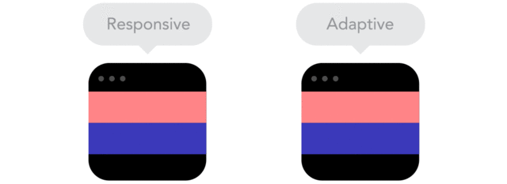
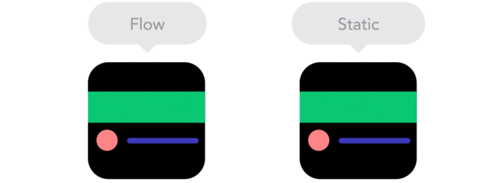
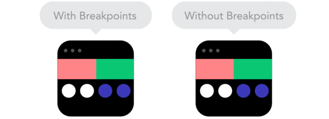
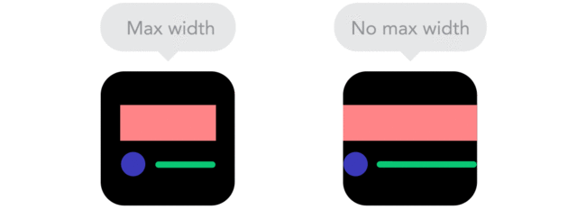
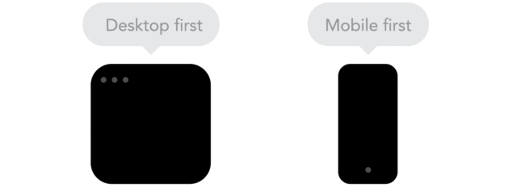
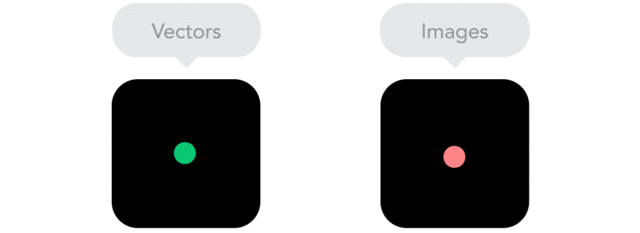

9 GIFs that explain responsive design brilliantly
The GIFs below show many of the basic principles of responsive designs, with explaining quotes by Froont co-founder Sandijs Ruluks
Responsive designs fluidly expand, whereas adaptive designs hitch as you expand a browser or viewport.

Positioning your designs elements using pixels as X,Y coordinates can cause a site designed for one screen to look weird on another. Use relative units, like percent of the screen, instead of static units like pixels.
"As screen sizes become smaller, content starts to take up more vertical space and anything below will be pushed down. It's called the flow."

"Breakpoints allow the layout to change at predefined points, i.e. having three columns on a desktop, but only one column on a mobile device."

By using nesting elements, you can make it so collections of onscreen elements adapt to a shrinking or expanding screen as one, instead of individually.
"Sometimes it's great that content takes up the whole width of a screen, like on a mobile device, but having the same content stretching to the whole width of your TV screen often makes less sense."

"Sometimes it's great that content takes up the whole width of a screen, like on a mobile device, but having the same content stretching to the whole width of your TV screen often makes less sense."

"Does your icon have lot of details and some fancy effects applied? If yes, use a bitmap. If not, consider using a vector image." A vector image can more properly adapt to different resolutions.
